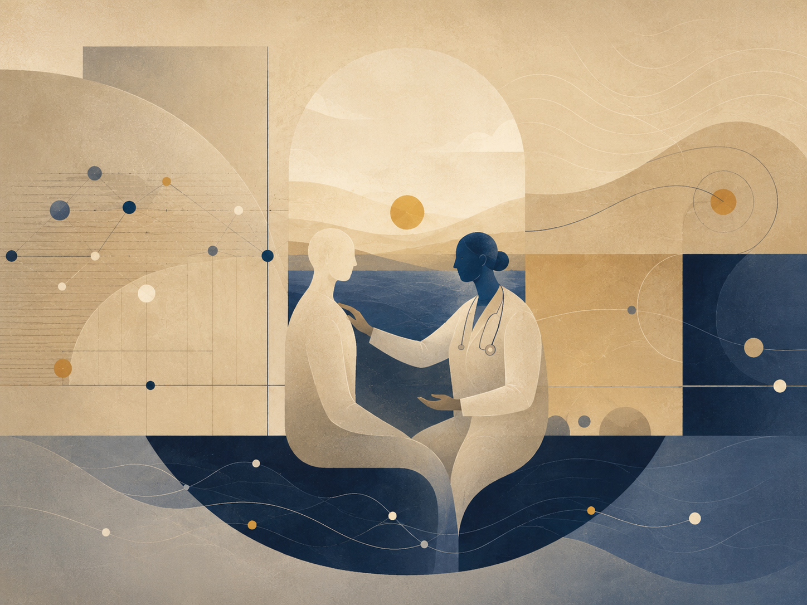

מרפא סדרתי
בדוק את עצמך קודם

Alon truly wanted to help.
Not “wanted to help” in the way people say it after they have already hurt someone. Truly. If someone at a party stood alone beside the plant, Alon noticed. If a friend sent a message too short for the hour, he called and did not make do with an emoji. If someone at work said, “Leave it, it’s nothing,” he heard the tiredness behind the nothing.
Sometimes he was right. Often he was right. That was the first problem.
The second problem was that he had learned to listen after a time in which no one had listened to him. At thirty-one, three things dropped out from beneath him at once: a job that seemed stable only because he had not dared to leave, a relationship that continued long after it had become habit, and a father who fell ill suddenly and moved the whole family into the language of tests, appointments, and short updates.
That year he began therapy. Then a mindfulness course. Then a workshop on attachment patterns. Then something about nonviolent communication, and something about trauma, and a recorded lecture that told him, in a very calm voice, that pain which receives no place will find itself a worse place.
The sentence stayed with him.
Alon did not become a therapist. He knew that. He even said it to people: “I’m not a professional.” But then he would add, explicitly or not, the word “but.”
But I know this. But I can see what is happening here. But maybe it is worth noticing. But I’m saying this with love.
The “but” was the door through which he entered.
In a blue notebook he wrote reminders about boundaries: Ask before you enter. Not every pain seeks interpretation. Sometimes a glass of water is the whole Torah.
On another page, in smaller letters, he wrote: And what if the person is drowning?
That page was dangerous. It did not look dangerous. It looked responsible. That was why it won so often.
One morning Ronit from the team entered the kitchenette with red eyes. She tried to open a tea bag and her hand could not catch the edge. Alon saw the tremor.
“Want me to open it?” he asked.
She nodded. He opened it, put it in the cup, poured water. Up to that point, the help was exact.
“Did something happen?” he asked.
“My mother is in the hospital,” she said. “I’m waiting for the doctor to call.”
The right sentence stood ready: I’m sorry. I’m here if you need anything.
He even began: “I’m sor-”
Then he saw the way Ronit held the cup with both hands, too tightly, as if releasing it would make her fall. Alon became frightened for her. When he became frightened, he became too useful.
“It may be,” he said carefully, “that your body is trying to hold control because you don’t have permission to fall apart right now.”
Ronit looked at him as if he had brought a large piece of furniture into a small room.
“What?”
“I mean gently. Sometimes functioning is a way not to meet helplessness.”
She nodded quickly. “I need to go back. The doctor is supposed to call.”
“Of course.”
He said of course, but the sentence he had already placed in the room remained there after she left.
That evening he opened the blue notebook and wrote: A diagnosis can be an invasion even when it is accurate. He underlined accurate twice.
He tried. He really did. For several weeks he practiced sending shorter messages. He learned to ask, “Do you want advice or do you want me to listen?” He discovered that people do not always know how to answer that question, and that the question itself can sometimes be another demand.
Then Maya called him. She was crying in a way that made words collapse into breath. Her brother had disappeared for two days and then returned as if nothing had happened. Their parents wanted silence. Maya wanted someone to say the silence was not normal.
Alon listened. He did well for almost twenty minutes. He did not name the wound. He did not build a theory. He said, “That sounds terrifying,” and “I’m with you,” and “Do you want me to stay on the line?”
Then Maya said, “Maybe I’m overreacting.”
A small alarm went off in him. Not the clean alarm of danger, the private alarm of old rooms in which no one had believed him.
“You are not overreacting,” he said. “You’re reenacting a family system that taught you to doubt your own alarm.”
Silence.
He heard himself only after the sentence had landed.
Maya breathed once. “Alon,” she said, “can you just be my friend?”
The question did not accuse him. That was why it hurt more.
He closed his eyes. In the blue notebook, the dangerous sentence raised its head: And if the person is drowning?
He answered it, for the first time, without letting it win.
“Sorry,” he said. “Yes. I can.”
For a while neither of them spoke. It was not a perfect silence. It had embarrassment in it, and fatigue, and the sound of a person trying to remain present after discovering he had entered where he had not been invited.
Later he added a new line to the notebook: Sometimes the rescue begins when I stop rescuing.
The line did not heal him. But the next time he brought someone water, he left the water there and did not explain thirst.